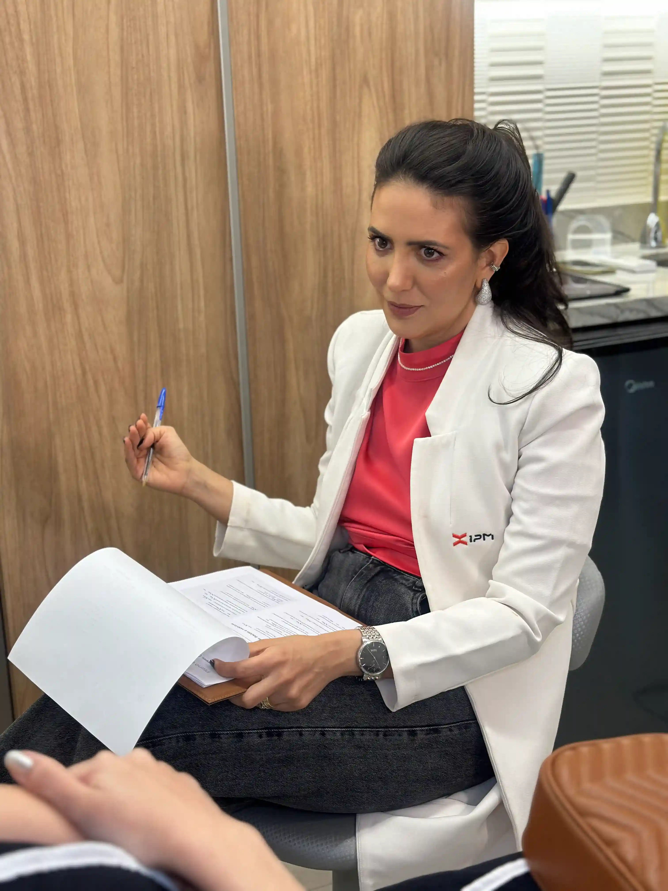
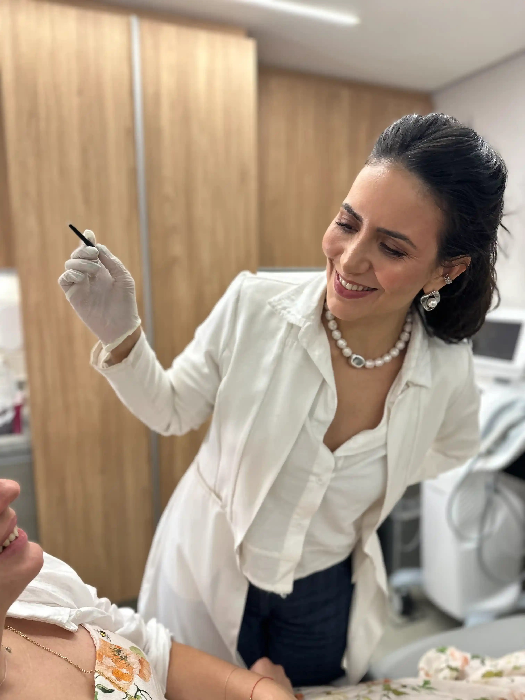

Você recupera o ar de descanso
O rosto deixa de transmitir cansaço, peso ou rigidez antes mesmo de você falar. Sua expressão volta a parecer mais leve, mais descansada e mais alinhada com a mulher que você é.
Conheça o Protocolo Elegance, o método de rejuvenescimento para mulheres que não aceitam a harmonização artificial.
O que você realmente ganha
O rosto deixa de transmitir cansaço, peso ou rigidez antes mesmo de você falar. Sua expressão volta a parecer mais leve, mais descansada e mais alinhada com a mulher que você é.
O objetivo não é mudar o seu rosto. É devolver firmeza, contorno e sustentação sem criar um rosto novo, pesado ou artificial.
Aqui, você não compra mililitros. Você entra em um protocolo que trata a arquitetura do rosto com leitura médica, estratégia e critério.
O Elegance não parte da ideia de preencher tudo. Ele parte da causa: perda de suporte, perda de firmeza, perda de colágeno e perda de viço.
O melhor resultado estético não é o que chama atenção pelo excesso. É o que faz alguém pensar: "Nossa, você está ótima. Voltou de férias?"
Nada aqui é pedido de cardápio. A médica analisa, prescreve e constrói o protocolo certo para o seu estágio.
Futuro preditivo
Esse protocolo não foi criado para produzir um rosto novo. Foi criado para interromper uma sensação que muitas mulheres conhecem em silêncio:
"a de olhar para o próprio rosto e sentir que ele está cansado, derretendo ou ficando mais pesado do que deveria."
O que o Elegance busca devolver é exatamente o que o mercado destruiu em nome do excesso: a naturalidade.
Na prática, isso tende a aparecer assim:
Mesmo em rotina pesada, sua expressão volta a transmitir vigor e leveza.
O rosto perde aquele aspecto de derretimento silencioso.
Mais viço, mais qualidade, mais presença.
Sem rosto inflado, sem expressão alterada, sem comentários pelas costas.
Não porque "mudou tudo", mas porque o seu rosto voltou a acompanhar a mulher forte, exigente e elegante que existe ali.
O resultado ideal não é chamar atenção pelo procedimento. É tornar impossível ignorar o quanto você está bem.
O Método
O paciente não compra uma seringa. Compra uma lógica de rejuvenescimento que inverte a lógica banal do mercado.
A consulta não existe para "escolher produto". Ela existe para entender a arquitetura do seu rosto.
Aqui, a análise considera:
Porque o rosto não envelhece só por perder volume. Ele envelhece porque perde suporte.
Antes de preencher ruga, o Elegance trata a causa. Usamos tecnologias e injetáveis para ancorar, reposicionar e devolver sustentação aos pilares da face que foram cedendo com o tempo. Esse é o ponto que separa refinamento de artificialidade.
A proposta não é apenas "corrigir agora". É estimular o próprio corpo a produzir mais firmeza e sustentação com o tempo. O foco está na pele a longo prazo, e não só no efeito imediato.
Depois da reestruturação, entra o que o mercado quase nunca sabe fazer com elegância: a continuidade certa. Não em surtos de procedimentos, mas em gerenciamento anual, para que você envelheça de forma impecável, e não reativa.


O diferencial
A maioria das clínicas empurra:
Isso produz o que a mulher mais rejeita:
O Elegance existe para romper com isso. Aqui, a estética não é tratada como cardápio. É tratada como prescrição.
A face não envelhece porque perde volume apenas. Ela envelhece porque perde suporte. E tentar resolver flacidez inflando o rosto é o caminho mais rápido para o exagero.
Por isso, o Elegance não vende procedimento. Vende Gerenciamento Global do Envelhecimento.
Para quem é
E também para você que…
A Clínica
A Grand Vie é uma clínica de dermatologia de alto padrão, dedicada ao cuidado integral da imagem, da pele e da saúde capilar, com atuação orientada por ciência, precisão diagnóstica e acompanhamento individualizado.
Nossa proposta vai além da realização de procedimentos isolados: trabalhamos com uma visão médica ampla, que considera a estrutura, a qualidade dos tecidos, o estágio de envelhecimento e as características únicas de cada paciente, para indicar condutas coerentes, elegantes e seguras.
No rejuvenescimento facial, adotamos uma abordagem estratégica, focada em naturalidade, firmeza, contorno e aparência descansada, sempre respeitando a identidade de quem nos procura.
No cuidado capilar, conduzimos cada caso com investigação clínica, leitura do padrão de queda e protocolos personalizados, voltados à preservação, recuperação e fortalecimento dos fios e do couro cabeludo.
Perguntas frequentes
É o método de rejuvenescimento da Grand Vie baseado em Gerenciamento Global do Envelhecimento. Ele trata o envelhecimento facial com leitura estrutural, protocolo individualizado e foco em naturalidade.
Não. Ele pode envolver recursos injetáveis, mas não se resume a preenchimento. A lógica é estrutural, não volumizadora.
O objetivo é parecer mais descansada, mais firme, mais leve e mais bem cuidada — sem perder identidade.
Não. O Elegance foi criado exatamente para evitar artificialidade, excesso e traços inflados.
Ao falar com a equipe, você entende a lógica do protocolo e o que faz sentido para o estágio atual do seu rosto.
Não. Ele também faz sentido para mulheres que já fizeram outros procedimentos e querem sair da lógica do excesso para entrar num refinamento real.
Não. A Grand Vie não trabalha com cardápio estético. A médica analisa e prescreve o que faz sentido para o seu caso.
Em alguns casos, o melhor caminho é tratamento. Em outros, tratamento com associação. E em outros, a cirurgia entra. O ponto é entender seu caso com precisão, não no impulso.
O Elegance é um protocolo premium, com ticket médio mais alto, porque não entrega mililitros: entrega estratégia, leitura clínica, estrutura e resultado refinado.
Porque querem um resultado que preserve identidade, devolva descanso ao rosto e elimine a sensação de artificialidade que o mercado banalizou.